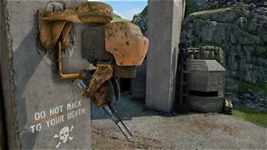
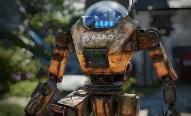

Robotics Division
Autonomous sentry platforms & field systems
Overview
B.A.R.D deployed multiple sentry families to guard approaches, corridors and keycard doors. Many platforms remained powered after the incident and continue limited patrols.
Class B Robot Unit 45

Mid‑weight chassis for patrol and door security; capable of mounting belt‑fed weapons with stabilised fire.
Orange B.A.R.D Robot

Hazard‑panel livery; widely deployed across Interchange and exterior compounds.
White B.A.R.D Robot
Interior patrol platform for laboratories and corridors; commonly paired with alarm nodes and card locks.
Black B.A.R.D Robot

Low‑visibility finish for night posts and yard coverage; harder to spot at range.
Flamethrower Variant

Area‑denial projector for corridors and decon zones. Avoid confined spaces.
Heavy Machine‑Gun Variant

Perimeter suppression; maintain hard cover and break line‑of‑sight.
Field Guidance
| Variant | Primary Threat | Mitigation | Typical Area |
|---|---|---|---|
| Class B Unit 45 | Accurate automatic fire | Use corners; flank to disable; avoid open sightlines | Patrol routes / bunker doors |
| Orange/White/Black | Standard sentry routines | Noise distractions; stay at range; monitor motor whine | Interchange, labs, yards |
| Flamethrower | Close‑range flame jet | Avoid corridors; lure into open; keep height advantage | Decon chokepoints |
| HMG | Suppression at range | Smoke & hard cover; do not repeat peeks | Perimeter towers/gates |